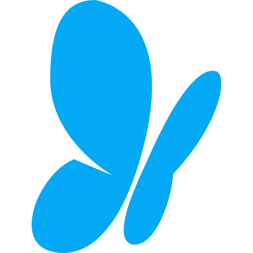
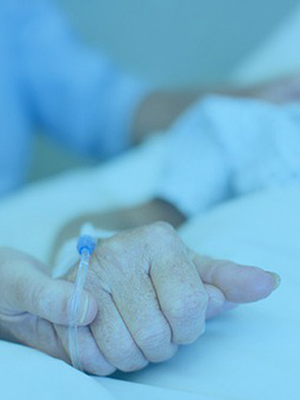

Atención médica a domicilio
Soporte oncológico para pacientes en tratamiento activo, cuidados continuos y manejo de pacientes oncológicos y no oncológicos paliativos con alto grado de dependencia en el confort de su hogar.
Dra. Paolett Tejada Paredes

Dra. Paolett TejadaOncología médica y medicina paliativa
Acompañamiento médico humano para pacientes oncológicos, personas con enfermedades avanzadas y familias que necesitan claridad, alivio y soporte continuo.
Acerca de mí
Mi nombre es Paolett Tejada Paredes, médica de profesión con especialidad en oncología clínica y medicina paliativa. Me desempeño en áreas de asistencia hospitalaria y domiciliaria que brindan soporte, manejo y monitoreo al paciente oncológico desde el diagnóstico, durante su tratamiento, en la etapa paliativa si es requerida y en pacientes sobrevivientes de cáncer.
Trabajo en este rubro desde hace más de 10 años. Durante este tiempo he recibido cursos, diplomados y maestrías en Perú y el extranjero, con el objetivo de brindar una atención de calidad acorde con las necesidades de cada paciente.
He tenido la oportunidad de acompañar, ayudar y aprender de muchas personas durante esta etapa difícil. Esto me ha enseñado a valorar la vida desde otra perspectiva y considero que toda persona tiene derecho a una buena calidad de vida, incluso cursando una enfermedad grave como el cáncer.
Datos académicos
Servicios
Soporte oncológico para pacientes en tratamiento activo, cuidados continuos y manejo de pacientes oncológicos y no oncológicos paliativos con alto grado de dependencia en el confort de su hogar.

Consejería oncológica, soporte, monitoreo sintomático y manejo del dolor para pacientes oncológicos y no oncológicos de forma ambulatoria.

Consejería oncológica, soporte, monitoreo, cuidados continuos y cuidados paliativos a través de tecnologías de información.
ConsultarEspecialidades
La medicina paliativa enfoca sus cuidados en personas con enfermedades graves, como el cáncer u otras condiciones sin posibilidad de continuar tratamientos con fines curativos o de prolongación de vida. Su objetivo es prevenir y aliviar el sufrimiento, y brindar una mejor calidad de vida.
El éxito de los cuidados paliativos se basa en una comunicación cordial, respetuosa y clara entre paciente, familia y médico, comprendiendo los objetivos, el estado de la enfermedad y las voluntades anticipadas del paciente.
La comprensión de la enfermedad, sus etapas, severidad, pronóstico y opciones de tratamiento permite tomar decisiones acertadas y evitar medidas que prolonguen innecesariamente el sufrimiento o no tengan como objetivo el bienestar del paciente.
Los cuidados continuos brindan soporte médico individual al paciente oncológico y a su familia para afrontar síntomas causados por la enfermedad, tratamientos y pruebas diagnósticas, con el fin de mejorar su salud y calidad de vida.
La enfermedad oncológica también afecta emocionalmente. La consejería individual y los cuidados continuos ayudan a brindar apoyo emocional y práctico a quienes se ven afectados por el cáncer.
El manejo del dolor incluye medicamentos y terapias para tratar dolor asociado a cirugías, lesiones o enfermedades. El dolor puede afectar la salud física y emocional, generar depresión, insomnio y dificultad para retomar actividades diarias.
Un buen control del dolor puede ayudar a descansar, sanar, mejorar el apetito, el sueño, la energía, el estado de ánimo y las relaciones. Un manejo adecuado mejora considerablemente la calidad de vida.
Galería


Contacto
Brindamos orientación para elegir la modalidad de atención más adecuada: domicilio, consultorio o telemedicina.